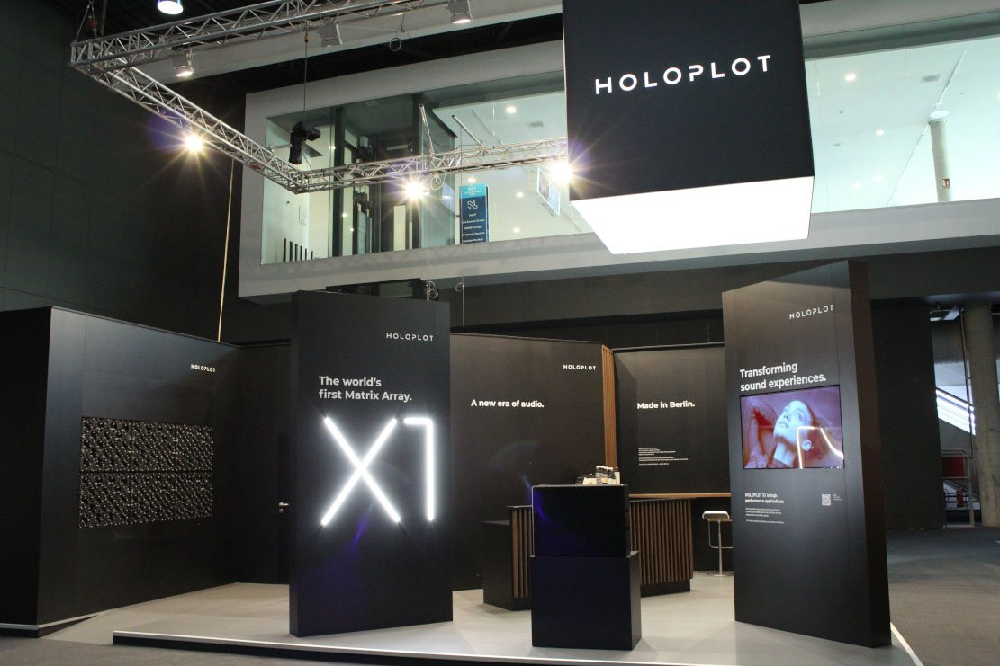

Selected work
Three companies, three very different jobs

A UK brand, made to work in 128+ Danish gyms
Bringing the Feel PureGym Good rebrand to Denmark and running local marketing across every Danish gym.
Read the case
Selling a sound system people have to hear
Award-winning trade show stands, demos and content for a new 3D audio technology.
Read the case
The whole marketing function, in one person
Strategy, agency, webshop, ads and a product of our own for a Berlin training studio.
Read the caseWhat people say
From the people I have worked with
Mette has solid expertise and an ability to turn strategy into action that creates visible results locally.
She’s a person who takes responsibility and jumps on projects from scratch to delivering. We did many projects together from digital marketing to trade shows and Mette always delivered and managed very intense situations across internal and external teams.
She always keeps the big picture in mind and works in a highly strategic and professional manner.
From recommendations on LinkedIn.